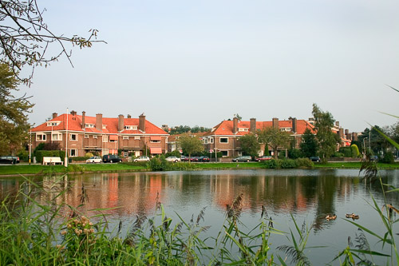

Myself
Born in The Hague, Netherlands, a city known for its beauty and as the residence of the Dutch royal family and the International Court of Justice. Growing up in such a remarkable city provided me with a unique cultural experience and a deep appreciation for its rich history and architectural wonders..
Interestingly, I had the privilege of attending the same primary school as the three Dutch princesses. Being in the presence of royalty during my school years was both exciting and humbling, emphasizing that in the Netherlands, every individual, regardless of their background, is valued and treated with respect. On one special occasion, during a school event, I had the incredible opportunity to stand by and share jokes with the Dutch king during his parental visit. This lighthearted and memorable interaction served as a powerful reminder of the open-mindedness and equality that I grew up with, leaving a lasting impression on my school days.
My family permanently relocated to Singapore when I was in Primary 4, and we have been incredibly fortunate to call this dynamic city our home ever since. Singapore has warmly embraced us, and we have truly enjoyed the diverse culture and vibrant atmosphere it offers. It has been an enriching experience adapting to a new environment, blending my European and Chinese roots in this multicultural society. This journey has not only developed my resilience but also provided me with a global perspective, as I have had the opportunity to interact with people from various backgrounds and embrace different traditions. Given our deep connection and love for Singapore, my family and I have made it our permanent home here, as it has become an integral part of our lives and identities.
Last but not the least, my other hobbies than programming and AI: